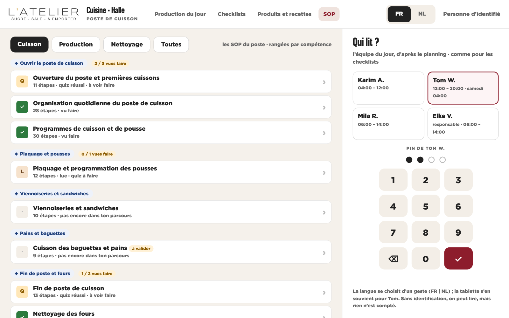
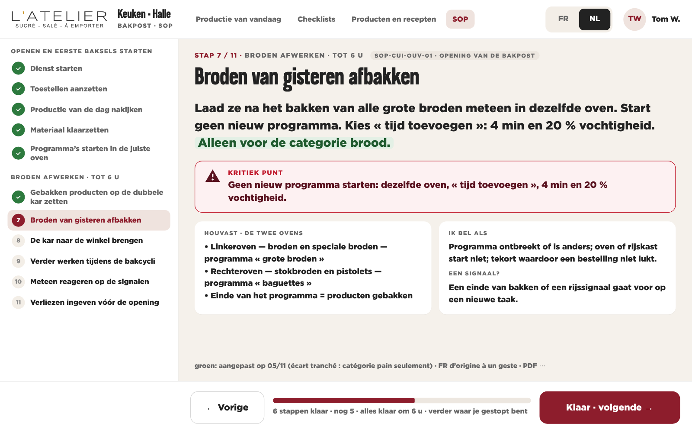
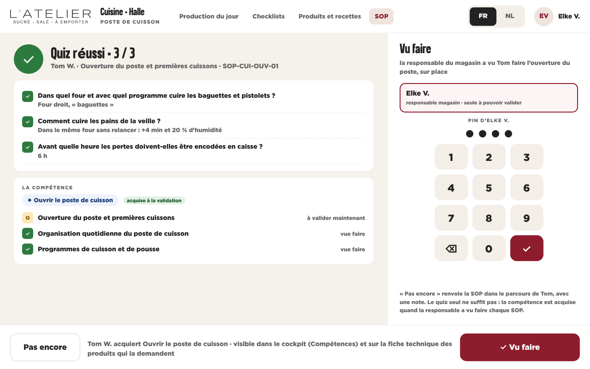
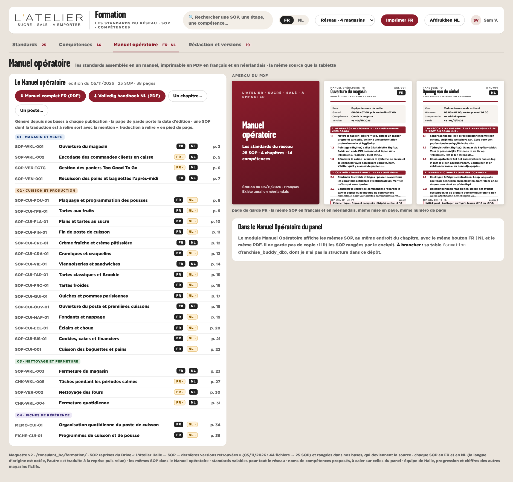
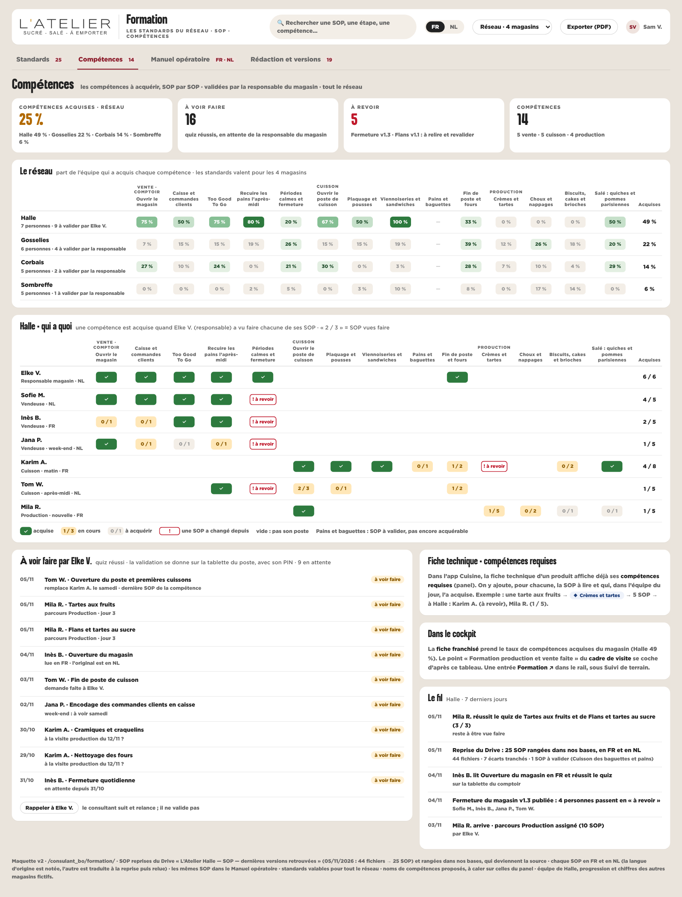
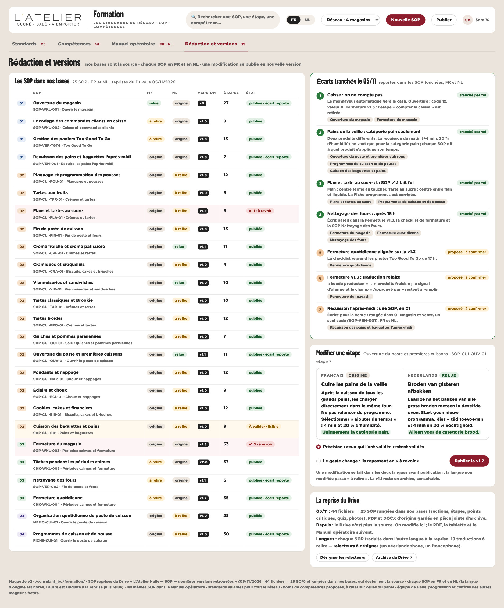

Formation — les standards du réseau, en FR et en NL, sur la tablette du poste
Les 25 SOP sont reprises du Drive et rangées dans nos bases, qui deviennent la source. Chacune existe en français et en néerlandais, étape par étape, avec son PDF dans les deux langues, et toutes ensemble forment le Manuel opératoire. L’équipe les lit sur la tablette du poste (onglet SOP de l’app Cuisine, et au comptoir) : son nom, son PIN, le pas à pas, le quiz. Puis la responsable du magasin valide « vu faire », et la personne acquiert la compétence. Valable pour tout le réseau.








Décidé le 05/11
1. Nos bases sont la sourceLes SOP sont reprises du Drive puis modifiées ici ; le Drive devient l’archive.
2. Étapes et PDFPas à pas étape par étape ; le PDF FR ou NL est généré et reste à un clic.
3. Tout en FR et en NLLes 25 SOP et tout le Manuel opératoire, dans les deux langues.
4. La tablette du posteSon nom et son PIN, comme pour les checklists de l’app Cuisine.
5. La responsable valide« Vu faire » est donné par la responsable du magasin, sur la tablette.
6. « À valider » reste visibleCuisson des baguettes et pains : lisible, sans validation.
7. Tout le réseauLes standards valent pour les 4 magasins.
8. Écarts tranchésMonnayeur (pas de comptage) · recuisson pour la catégorie pain seulement · la SOP Flans v1.1 fait foi · fours après 16 h.
9. Couplé aux compétences14 compétences à acquérir ; reprises sur la fiche technique et dans le cockpit.
Encore à confirmer
Les 14 compétencesNoms et regroupements proposés : on reprend ceux du panel (fiche technique) ou on garde ceux-ci ?
Relecture des traductionsQui relit le NL et le FR traduits à la reprise (19 SOP) ?
Écarts 5 à 7 proposésChecklist de fermeture alignée sur la v1.3 · traduction de la Fermeture refaite · Recuisson rangée en 01.